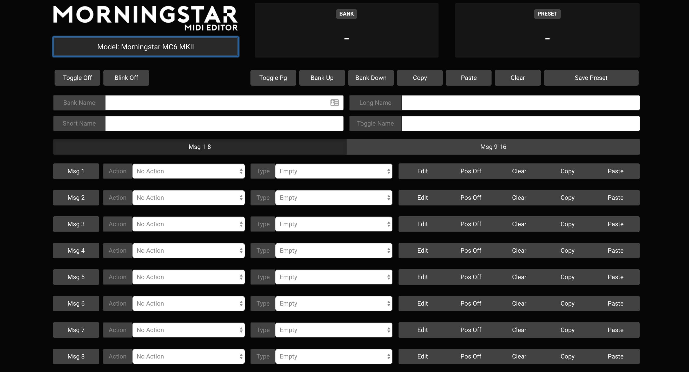
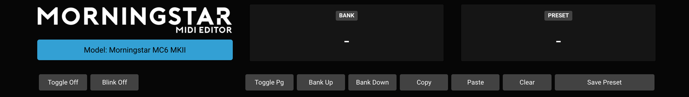

Midi Editor
Using the web/desktop editor with your MC6 MKII
Besides using the on-board Midi editing features on the MC6, you can also edit your settings via the web and desktop editor. The links are available on our website.
NOTE: A number of functions are disabled when the MC6 is in editor mode. When using or testing the MC6 with other devices, please toggle out of editor mode.
Connect your MC6 via USB to your computer and launch the editor. The editor should detect your MC6 and load the editing dashboard as shown below.

Your MC6 will have to be in Editor Mode for it to communicate with the editor. You can toggle into editor mode by pressing Switch [C + D] or by pressing the button below the logo on the editor [Model: Morningstar MC6 MKII].
Once your controller is in editor mode, the Model button will turn Blue, indicating that it is communicating with your controller. You can then press any switch on the MC6 to edit the corresponding preset. To edit your expression pedal, simply move the pedal and the settings will be loaded on the editor.

The editing parameters are similar to the on-board editing parameters.
There are various controls on the top right panel of the editor (below the Bank and Preset number display). You can toggle the page on the MC6, Bank up or down or copy and paste presets. You can also clear your preset settings by double clicking the Clear button. This also applies to the Clear button on the individual Messages, where the Clear button has to be double clicked.